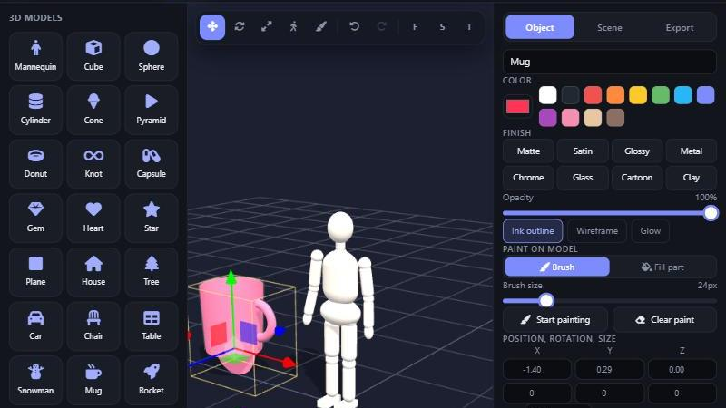
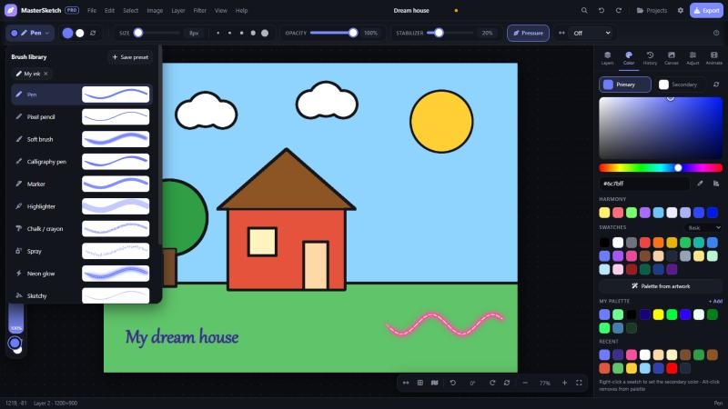

🧊
New: 3D Studioใหม่! สตูดิโอ 3D
21 ready-made models, including a poseable mannequin with 9 poses, or import your own .glb, .obj and .stl files. Colour them, paint right on them, pick metal, glass or cartoon looks, light the scene, then place the picture on your drawing or export a spinning GIF.โมเดลสำเร็จรูป 21 แบบ รวมหุ่นจำลองที่จัดท่าได้ 9 ท่า หรือนำเข้าไฟล์ .glb, .obj และ .stl ของคุณเอง เปลี่ยนสี ระบายสีลงบนโมเดล เลือกพื้นผิวโลหะ แก้ว หรือการ์ตูน จัดแสง แล้ววางภาพลงบนภาพวาดหรือส่งออกเป็น GIF หมุนรอบ

🖌️
13 brushes with live previewsแปรง 13 แบบพร้อมตัวอย่างสด
Pen, pencil, soft airbrush, calligraphy, marker, chalk, spray, neon glow, watercolor, sketchy and more. Save your favourite settings as presets.ปากกา ดินสอ แปรงนุ่ม คอลลิกราฟี มาร์กเกอร์ ชอล์ก สเปรย์ นีออน สีน้ำ ลายเส้นสเก็ตช์ และอีกมาก บันทึกการตั้งค่าที่ชอบเป็นพรีเซ็ตได้
🖼️
Photo to line artรูปถ่ายเป็นลายเส้น
Turn any picture into a clean colouring page or a pencil sketch — only the outlines stay.เปลี่ยนรูปภาพเป็นภาพระบายสีหรือภาพร่างดินสอ เหลือเฉพาะเส้นโครงร่าง
🎞️
Animation & GIFsแอนิเมชันและ GIF
Each layer is a frame, with onion skin and playback. Export to GIF or video.แต่ละเลเยอร์คือเฟรม มีโอเนียนสกินและเล่นดูได้ ส่งออกเป็น GIF หรือวิดีโอ
📚
Layers that behaveระบบเลเยอร์เต็มรูปแบบ
16 blend modes, opacity, locks, drag to reorder, merge and flatten.โหมดผสม 16 แบบ ปรับความทึบ ล็อก ลากเพื่อจัดลำดับ รวมเลเยอร์
🔤
Text with 50+ fontsข้อความกับฟอนต์กว่า 50 แบบ
Thai fonts like Kanit and Sarabun, import your own font files, outline, shadow and alignment.มีฟอนต์ไทยอย่าง Kanit และ Sarabun นำเข้าฟอนต์ของคุณเองได้ พร้อมเส้นขอบ เงา และการจัดตำแหน่ง
🪞
Symmetry & guidesสมมาตรและเส้นช่วย
Mirror, 4-way, radial and mandala drawing, plus perspective and rule-of-thirds guides.วาดแบบสะท้อน 4 ทาง รัศมี และมันดาลา พร้อมเส้นช่วยทัศนียภาพและกฎสามส่วน
✍️
Pen pressure & palm rejectionแรงกดปากกาและกันฝ่ามือ
Works with Apple Pencil and stylus pens. Pinch to zoom, twist to rotate, two-finger tap to undo.รองรับ Apple Pencil และปากกาสไตลัส บีบเพื่อซูม หมุนด้วยสองนิ้ว แตะสองนิ้วเพื่อเลิกทำ
😀
Stickers & shapesสติกเกอร์และรูปทรง
125 emoji stickers plus lines, arrows, stars, hearts and speech bubbles.สติกเกอร์อีโมจิ 125 แบบ พร้อมเส้น ลูกศร ดาว หัวใจ และกรอบคำพูด
🌐
Yours, your wayปรับได้ตามใจ
6 themes, 5 languages (including ไทย), movable panels, custom shortcuts. Works offline.6 ธีม 5 ภาษา (รวมภาษาไทย) ย้ายแผงได้ ตั้งคีย์ลัดเองได้ และใช้งานออฟไลน์ได้